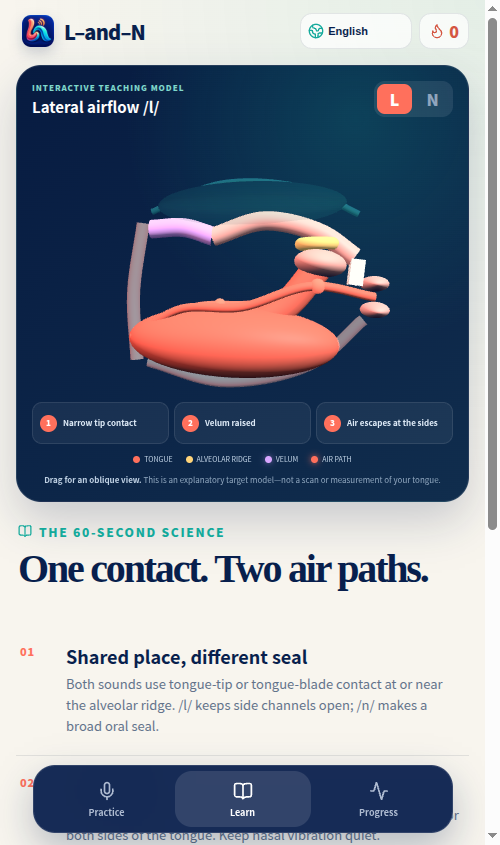
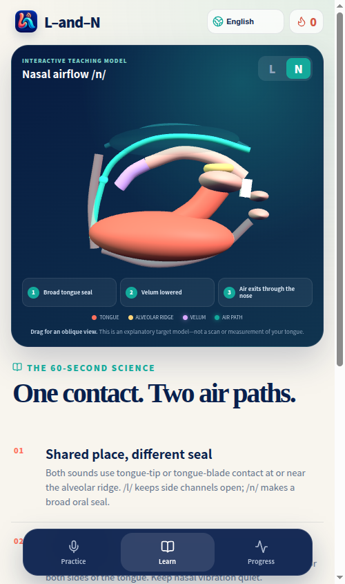

L
light
/laɪt/
Model prompt: “The practice word is light.”
Try: touch the ridge with your tongue tip and let air continue around its sides.
A short L & N lesson
Hear the first sound, notice where the air goes, then put the two words together. You can finish this page without signing up or using a microphone.
Meaning anchors: light (brightness) · 光 guāng · 光 gwong1 night · 夜晚 yèwǎn · 夜晚 je6 maan5
Listen first
Both sounds use the tongue near the ridge behind the upper teeth. The useful contrast is the air path.
/laɪt/
Model prompt: “The practice word is light.”
Try: touch the ridge with your tongue tip and let air continue around its sides.
/naɪt/
Model prompt: “The practice word is night.”
Try: close the mouth path with the tongue and let the opening sound pass through the nose.


These are teaching models of the target gestures, not images of your mouth.
Your turn
Play light, pause, then play night. Listen only for the very beginning.
Say a long llll, then a long nnnn. For N, a light fingertip on the side of your nose may help you notice vibration.
Say “light — night” three times. Then try: “a light at night” and “a night light.” Keep the first sound clear before speeding up.
The free browser drill adds words such as low/no, lace/nice, and lock/knock. Recording is optional until you tap the microphone button.
See the whole loop
“The practice word is light.” “The practice word is night.” The remaining sequence uses music and on-screen demonstrations.
Make the next lesson better
One or two sentences are enough. Please do not attach a voice recording.
The articulation sequence follows the linked Pronunciation Snippets lesson. The audio, teaching models, and walkthrough on this page are L & N project assets.
Watch the original Pronunciation Snippets lesson · View this lesson’s source · Privacy